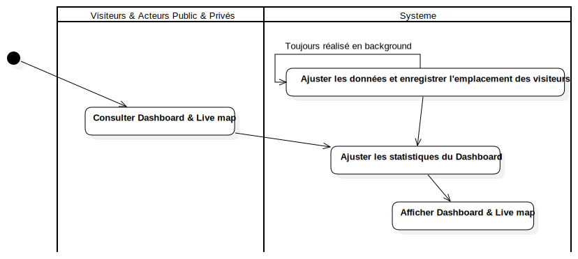

Activity diag: Service Dashboard
UMLActivity
Smart Tourisme
::
Activity diag: Service Dashboard
Description
none
Diagrams

Service Dashboard Activity diag
Groups
Visiteurs & Acteurs Public & Privés
Systeme
Nodes
InitialNode1
Edges
Toujours réalisé en background (Ajuster les données et enregistrer l'emplacement des visiteurs→Ajuster les données et enregistrer l'emplacement des visiteurs)
(Consulter Dashboard & Live map→Ajuster les statistiques du Dashboard)
(InitialNode1→Consulter Dashboard & Live map)
(Ajuster les statistiques du Dashboard→Afficher Dashboard & Live map)
(Ajuster les données et enregistrer l'emplacement des visiteurs→Ajuster les statistiques du Dashboard)
Properties
Name
Value
name
Activity diag: Service Dashboard
stereotype
null
visibility
public
isReentrant
true
isReadOnly
false
isSingleExecution
false
Owned Elements
Service Dashboard Activity diag